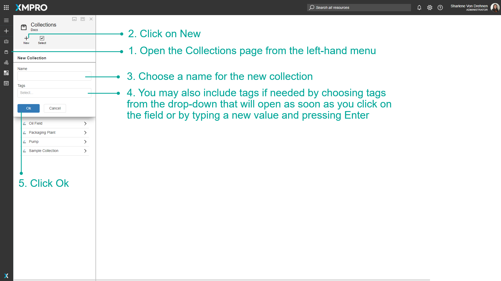

Manage Collections
Stream Hosts are grouped into different Collections, which are created and maintained in Data Stream Designer. A Collection can be defined as a category that contains a set of Stream Hosts that run the same Data Streams. Collections are used to prevent you from having to redeploy a Data Stream to multiple Stream Hosts, devices, and assets. When a Data Stream is published for a Collection, the devices themselves can just subscribe to that Collection.
Note
It is recommended that you read the article listed below to improve your understanding of Collections.
Video 1: How To Use Collections
Create a Collection
Collections are an important concept in the Data Stream Designer. You might have to create a Collection soon after starting to use the Application as they are crucial to the workings of use cases and Streams. A Collection also has to be created before installing a Stream Host as the Stream host is dependent on the information contained in a Collection. To create a Collection, follow the steps below:
- Open the Collections page from the left-hand menu.
- Click on New.
- Choose a name for the new Collection.
- You may also include tags if needed by choosing tags from the drop-down that will open as soon as you click on the field or by typing a new value and pressing Enter.
- Click Ok.


Change a Collection key
It might be needed to replace or change the key that is associated with a Collection from time to time. To replace a key with a new one, follow the steps below:
- Open the Collections page from the left-hand menu.
- Select the Collection from the list.
- Click on Revoke Key.
- Confirm that you would like to revoke the key. After clicking Revoke, the key will be replaced with a new key.

Delete a Collection
To remove a Collection, follow the steps below:
- Open the Collections page from the left-hand menu.
- Select the Collection you would like to remove.
- Click on the Delete button.
- Confirm that you would like to delete the selected Collection.

Further Reading
Last modified: August 14, 2025